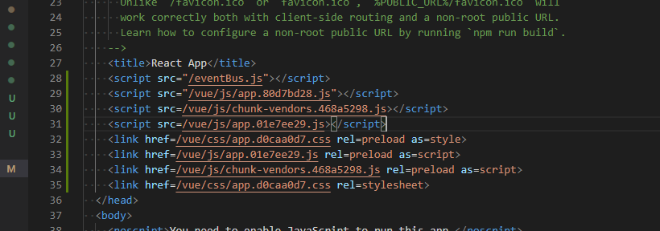
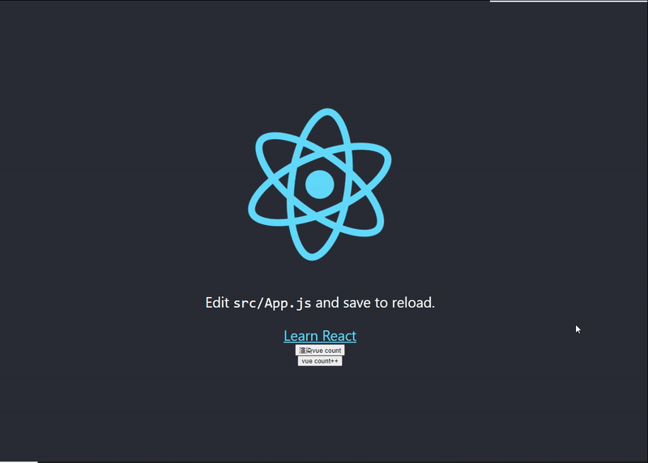

React和Vue组件通信
测试一下可行性
js 上感觉完全可行，样式可能会有冲突
桥梁
用发布订阅模式，创建一个事件对象
// 执行某操作后需要触发别的组件行为的时候,绑定一个bus
function EventBus() {
this.eventList = {}
}
// 订阅事件
EventBus.prototype.on = function (eventName, callback) {
const eList = this.eventList
if (eventName in eList) {
// 有这个key
eList[eventName].push(callback)
} else {
// 没有key
eList[eventName] = [callback]
}
}
// 解绑事件
EventBus.prototype.un = function (eventName, callback) {
const eList = this.eventList[eventName] || [] //容错
for (let i = 0; i < eList.length; i++) {
if (eList[i] === callback) {
// 删除这个callback
eList.splice(i, 1)
if (eList.length === 0) {
// delete回收
delete this.eventList[eventName]
}
return
}
}
}
EventBus.prototype.emit = function (eventName, data) {
(this.eventList[eventName] || []).forEach(cb => cb(data))
}
window.EB = new EventBus()
创建测试项目
create-react-app 创建个项目 vue-cli 创建个项目
react 项目的工作
身为四年级的 react 作为最好的老大哥，去 render vue vue 项目作为一个 count 计数器 功能的组件
1.告知 vue 要渲染，并准备一个 dom 作为容器
2.功能按钮，触发 vue count++
function App() {
function renderVue() {
window.EB.emit('vue:render me','#bpp')
}
function count() {
window.EB.emit('vue:let me ++')
}
return (
<div className="App">
<header className="App-header">
<img src={logo} className="App-logo" alt="logo" />
<p>
Edit <code>src/App.js</code> and save to reload.
</p>
<a
className="App-link"
href="https://reactjs.org"
target="_blank"
rel="noopener noreferrer"
>
Learn React
</a>
<div id='bpp'></div>
<button onClick={renderVue}>渲染vue count</button>
<button onClick={count}>vue count++</button>
</header>
</div>
);
}
vue 项目的工作
###1.延迟渲染，等到 react 叫他渲染在渲染
import Vue from 'vue'
import App from './App.vue'
Vue.config.productionTip = false
window.EB.on('vue:render me', (elementId) => {
new Vue({
render: h => h(App),
}).$mount(elementId)
})
###2.有自己的一个 count 状态值监听事件，修改 count 值
export default {
name: "HelloWorld",
data() {
return {
count: 0,
};
},
mounted() {
window.EB.on("vue:let me ++", this.jiajia);
},
beforeDestroy() {
window.EB.un("vue:let me ++", this.jiajia);
},
methods: {
jiajia() {
this.count++;
},
},
props: {
msg: String,
},
};
打包
把 vue 资源路径改成/vue 好管理 在 react 项目 html 页引入 vue 静态资源

效果

结论
没啥用，挺好玩的，纯 js 的，css 还可能污染，不过不用在意 2 个项目的环境，反正运行的都是 js 代码